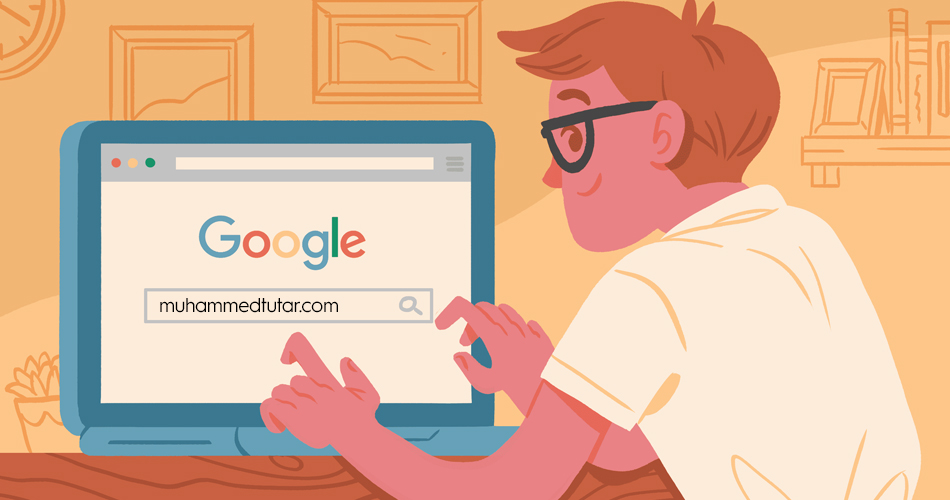

İnternette Gezinmek
Sosyal medya olarak Youtube kullanıyorum. Çünkü diğer uygulumalarda (Instagram, Twitter, Facebook vs.) ses getirmiş konular burada paylaşılıyor. Takip ettiğim iki isim Barış Özcan ve Fit Traveler'dir.